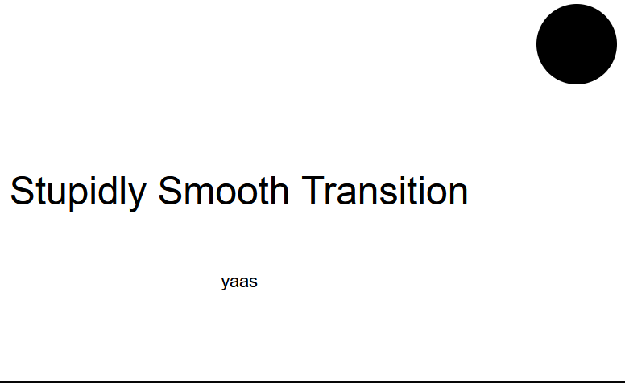
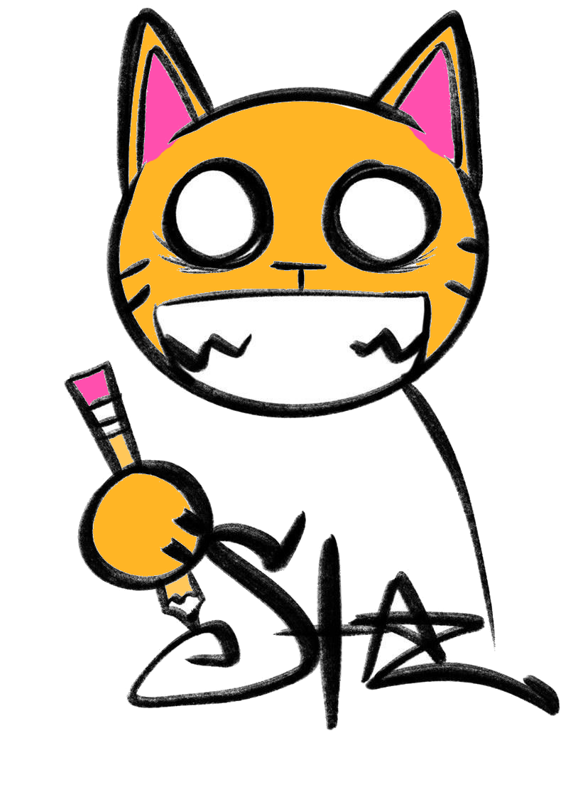
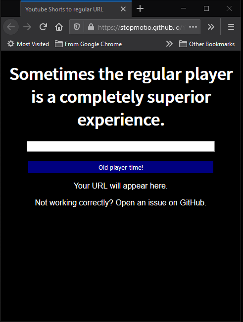
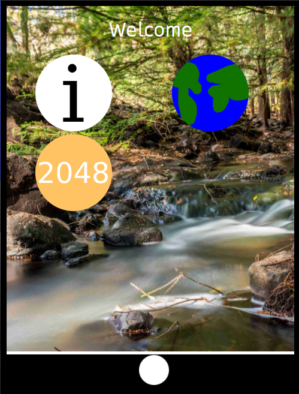
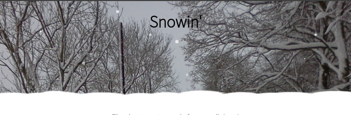

Note: Hover over images to make them larger.
If you are interested in using these, for any purpose other than by themselves, please check the license for information reguarding how you can use these in your projects and also what you must do to accomodate them. Most are under the MIT License, but you should always double check.
JSBlog
JSBlog is a static-site system for blogging. It requires no serverside code, and posts are written in HTML. This is used more prominently here in Chatterbox. The only requirement is that it is not a local file. (due to security restrictions)
Open Repo(no demo site availible)Stupidly Smooth Dark Theme Transition (CodePen only)
Starting from a friend writing "it dies" on the end of "what happens when you hover on the link?" on a class whiteboard, (more specifically the adding of a dark theme immediately thereafter) this is exactly what it says on the tin – A simple dark and light theme transition, except entirely seamless. It's only on CodePen because CodePen is all about silly demos, and it would seem out of place on GitHub – not that I'm a stranger to that.
I AM AT THE CURRENT UNIX TIMESTAMP
Out of sheer boredom, combined with an interesting thought after seeing a similar meme but with the combine dark energy core. I decided to take it up a notch, and then I thought "well it's not current, let's make one that always is." So now, I've made it into a site that knows the time on your device, and will always be exactly -- To the millisecond! -- The same as your device.
Staz Cat Comics
For a school project involving brand study, I made this website from scraps of this one. Not much to see, but will remain here in (what is effectively) perpetuity.
YouTube Shorts to Normal YouTube
I'm not entirely sure what to call this. It was made because YouTube is making the regular player harder to access for shorts, especially on mobile. This makes it impossible to add the video to playlists or see the dislike count, plus the regular player has great controls. It is licensed under the MIT license.
simpleGUI mobile
simpleGUI mobile is designed for similar applications to the regular simpleGUI, but with the added condition that it must work with mobile devices. It can only have one application open at once, though, which is a slight downside. It uses an outer layer for desktops, for a quick-and-dirty solution to stretching the UI. It's licensed under the MIT license.
Snow
Snow is a simple JavaScript snow animation made as I was bored and had not much else. As it uses a snowflake library licensed under Apache 2.0, the actual thing itself is also licensed under that.
simpleGUI

simpleGUI is a desktop-like webGUI intended for use in embedded systems, once again made as a challenge. It uses the winbox.js window manager, and in fact was made possible entirely by it. As WinBox is licensed under Apache 2.0, simpleGUI is also licensed under Apache 2.0 for the sake of legal simplicity. I wanted to use MIT but was not entirely sure that the licenses are compatible. By default, Notepad Web, 2048, a web browser, and an info program are included, but it is easy to develop custom applications for simpleGUI. (it takes standard webpages readily with no modification, except for pages protected by frame killers)
PRAISE DOGE

Bored in class, I asked my peers, "Give me an idea", and someone said "A website for doge". So I made it in the 10 minutes I had. It's my first ever CodePen, and it's licensed under the MIT license for maximum doge praise. PRAISE DOGE.
Notepad Web

Notepad Web is a text editor(like notepad for Windows) but useable through a browser. It's a very simple concept I made to test my merit as a web application creator. It is licensed under the GNU GPL 3.0 License, which you can read in it's entirety in either the editor itself or the GitHub repo. Older versions exist that are under GPL 2.0, even though 3.0 was out at that time.